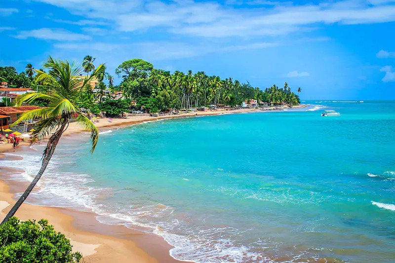
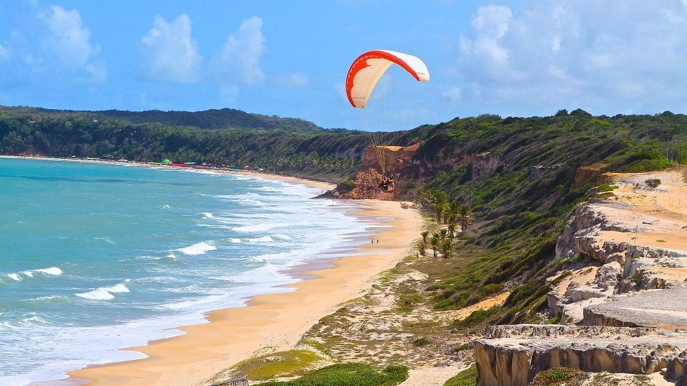
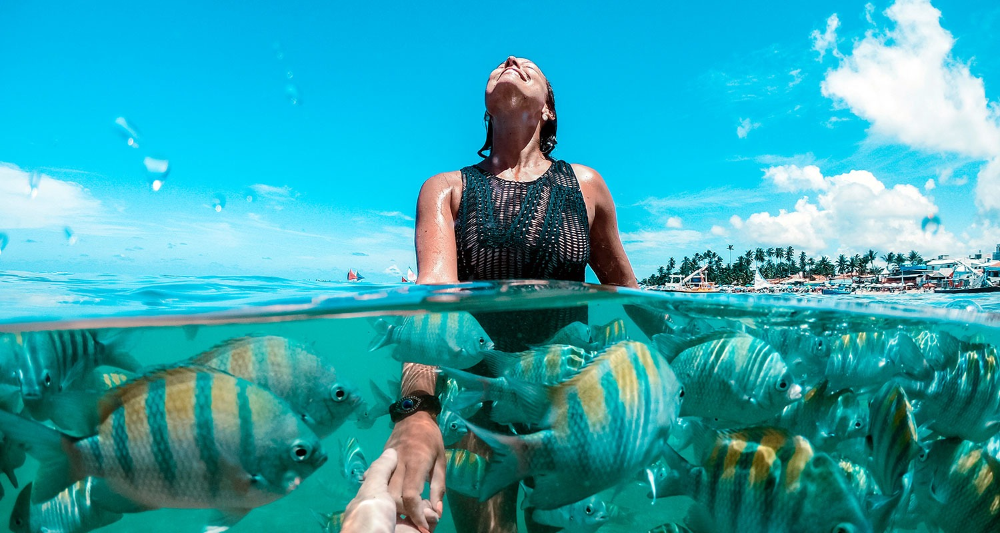

São Miguel dos Milagres é mais um destino da Costa dos Corais, com seus 120 km entre o litoral norte de Alagoas e o litoral sul de Pernambuco, mais precisamente desde Paripueira / AL até Tamandaré / PE. Esta região é repleta de praias paradisíacas e piscinas naturais..
Porto de Galinhas
Porto de Galinhas é a principal e mais movimentada das praias do litoral pernambucano, visitada o ano inteiro pelos turistas devido, à sua beleza natural e à excelente infra-estrutura hoteleira. A praia de Porto de Galinhas está localizada no município de Ipojuca, a 60Km ao sul do Recife. Em direção sul..
Jericoacoara

Jericoacoara é um pequeno paraíso de águas doces e salgadas na costa oeste do Ceará. Tem uma estrutura turística invejável, a 300 km de Fortaleza, com excelentes restaurantes, bares com forró ao vivo e hotéis conhecidos no país inteiro. E o melhor: sem perder o jeitinho de vila de pescador.
Praia da Pipa

A Praia de (da) Pipa é uma famosa praia localizada no município de Tibau do Sul, ficando a 85 km de Natal, capital do estado do Rio Grande do Norte, Brasil. É o principal balneário do Litoral Sul do estado, que inclui ainda praias como Ponta do Madeiro e Praia do Amor.
Maragogi

Maragogi é um município do estado de Alagoas, no nordeste brasileiro, conhecido pelas águas cristalinas e de tons azul-turquesa e verde-esmeralda das praias e piscinas naturais. Esse lugar faz parte da Costa dos Corais, uma área extensa de proteção ambiental, e encanta pela beleza paradisíaca.